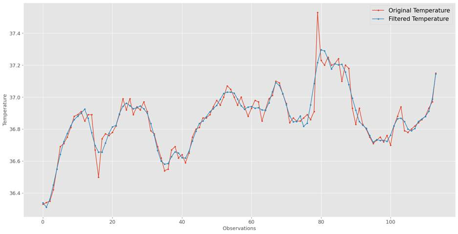
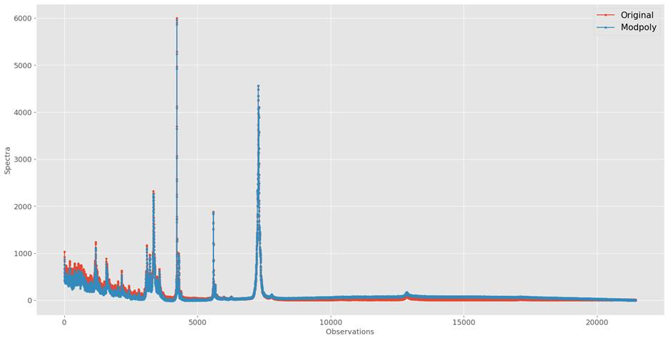
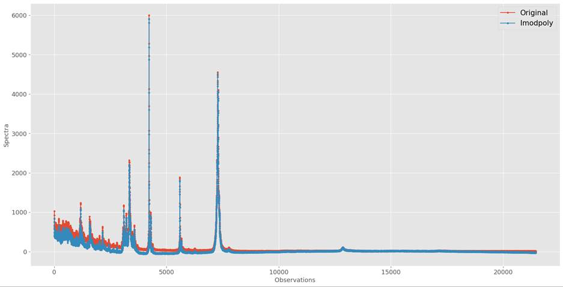
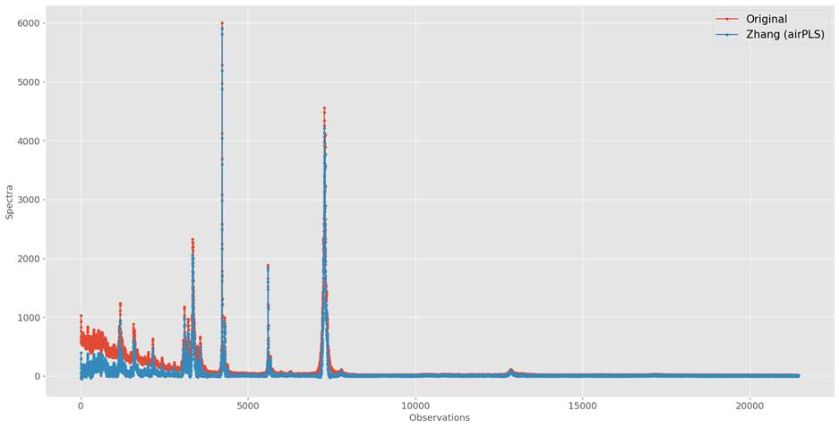

11.4: Signal Processing
It is the domain that deals with
analyzing, modifying, and synthesizing signals. A signal can be audio, video,
radar measurement, etc. It converts and transforms data to enable us to see
things that are not possible via direct observation. The most common
applications of signal processing are audio and video compression, speech
recognition, improving audio quality in phone calls, oil exploration, etc.
Signal processing can help us
extract important parts of the signal, which can then be used as features to
train the model. If the features are derived from signals, it can help if we
clean the features using signal processing techniques methods. We will discuss
two such methods which are useful for machine learning applications. Filtering
of signals, and baseline removal for Raman spectra.
11.4.1 Filtering
In signal processing, filtering
denotes removing unwanted frequencies and frequency bands from the signal. It
helps in increasing the precision of the data without distorting the signal. It
is performed through a process known as convolution. It fits subsets of
adjacent data with low-degree polynomials using linear least squares. It has
wide use in radio, music synthesis, image processing, etc. Savitzky-Golay
filter is one of the commonly used methods for removing noise from data. Let s
discuss some practical machine-learning applications that use filtering.
Savitzky-Golay filter has been used [1]
in demand forecasting for eliminating outliers and noises in the non-stationary
time series. This helps time series models to learn better from the filtered
data and forecast more accurately. It can also be used with deep learning. For
example, it has been used [2] with one-dimensional CNN layers to
identify abnormal EEG signals, without using any explicit feature extraction
technique.
We will analyze the beaver body
temperature discussed in chapter 1. There are 2 beavers, and we will only
analyze the body temperature of beaver 1 for the sake of simplicity. Let's look
at beaver1's body temperature with and without filtering in figure 11.4.1. We
can see that filtered temperatures have less volatility and are more stable. It
retains the information about patterns in temperature, and at the same time
filters and suppresses possible noise and extreme values. We used the
polynomial order of 5 and a window length of 11 for filtering. If needed, we
can increase or decrease the values, based on observed patterns in the data to
help the algorithm filter noise more accurately.

Figure 11.4.1: Beaver1 body
temperature with and without Savitzky-Golay filtering
11.4.2 Baseline Removal
Raman spectra are widely used in
different scientific fields that focus on studying macromolecules. It allows
both chemical and physical structural analysis of materials, using a small
sample, without damaging the samples. This is used by law enforcement agencies
for identifying contraband items, without physically inspecting them. It can
also be used for detecting diseases [3], without any need for
further medical diagnostics.
Despite its usefulness, Raman
spectra has one issue that needs to be taken care of before using. It carries a
background, otherwise known as the baseline. Unless treated and removed, the
baseline can cause negative effects in the qualitative and quantitative
analysis of spectra. Hence, Raman spectra are fitted and corrected to mitigate
this negative influence before being used. There are many methods of correcting
the baseline. We will discuss 3 methods with the help of the companion python library
BaselineRemoval
and see how the three algorithms can help remove background from the spectra.
Modified multi-polynomial fit, also
known as ModPoly uses thresholding, to iteratively
fit a polynomial baseline to data. Its limitation is that it is prone to
variability in data which has a low signal-to-noise ratio. It can smoothen the
spectrum by automatically eliminating Raman peaks and leaving behind baseline
fluorescence, which can finally be subtracted from the raw spectrum. It uses
least-square polynomial fitting functions. Data points are generated from this
curve. Data points with higher values than the respective input values are
assigned to the original intensity. This exercise is repeated for several
iterations, between 25 to 200. The number of repetitions depends on factors
such as the relative amount of fluorescence to Raman.
There are some major limitations for
ModPoly, as it is dependent on the spectral fitting
range and the polynomial order specified. It might not be an ideal solution for
high-noise situations, as noise is not appropriately dealt with in ModPoly. ModPoly tends to
introduce artificial peaks in the data in places where the original spectrum
was free of such peaks. Also, existing large peaks in the data tend to
contribute more to the polynomial fitting, which can in turn bias in the
results.
Improved ModPoly,
also known as IModPoly is an improvement on the ModPoly algorithm and is meant for noisy data. Identifying
and removing major peaks is limited to the first iteration only. This prevents
unnecessary data rejection. For each iteration of polynomial fitting, lower
values of the wave number are selected and concatenated. This is used for
constructing a modified spectrum. This in turn is then fitted again. Despite
the improved version of the algorithm, IModPoly, just
like its predecessor, requires user intervention and prior information, such as
detected peaks.
A new method was proposed by Zhang [4],
which doesn t require any user intervention and prior information, such as
detected peaks. It is named adaptive iteratively reweighted penalized least
squares. It is a fast and flexible method that performs adaptive iteratively
reweighted penalized least squares. This helps in approximating complex
baselines. In each iteration, weights are obtained adaptively by using SSE
between a previously fitted baseline and original signals. It uses a penalty
approach to control the smoothness of the fitted baseline. It does so by using
the sum squared derivatives of the fitted baseline. Lambda is a parameter
controlled by the user. Larger the lambda, the smoother the fitted vector.
Let s now look at data distribution
for original spectra and baseline corrected spectra for the skimmed milk
samples discussed in chapter 1.

Figure 11.4.2.1: Original Vs. ModPoly corrected
spectra of skimmed milk samples
We can see in figure 11.4.2.1 that
artificial peaks are introduced by ModPoly for
observations at 8000 till 20000. In this region, ModPoly
is higher than the original spectrum.

Figure 11.4.2.2: Original Vs. IModPoly corrected
spectra of skimmed milk samples
As seen in figure 11.4.2.2, ImodPoly performs
better than ModPoly.
It removed noise from the spectra, as seen in the plot, between 0 to 8000, and
further after 19000. Also, unlike ModPoly, it didn t
add an artificial peak.

Figure 11.4.2.3: Original Vs. airPLS corrected
spectra of skimmed milk samples
We can see in figure 11.4.2.3 for the airPLS
method that it removed noise from spectra better than previous algorithms.
Especially, for observations between 0 and 2500. As the denoised spectra in
this section resemble closely with the rest of the spectra.